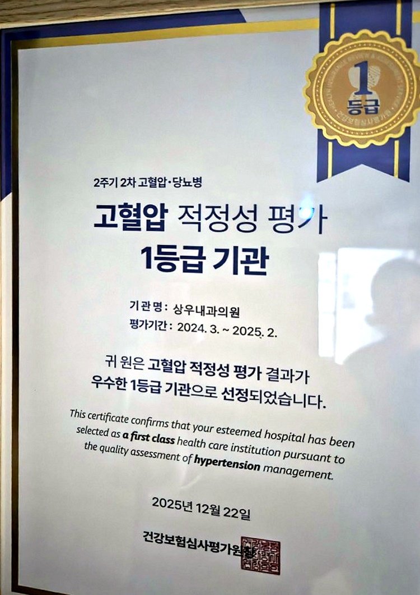

계양구 계산역 고혈압 적정성 평가 1등급 선정: 심평원 우수기관 상우내과의원의 맞춤 혈압 관리
인천 계양구 계산동(계산역 4번 출구 앞) 상우내과의원이 건강보험심사평가원에서 실시한 [2주기 2차 고혈압 적정성 평가]에서 최우수 등급인 '1등급 우수기관'으로 공식 선정되었습니다. 심평원 당뇨병 적정성 평가 1등급에 이어 고혈압 부문에서도 연속 1등급을 획득함으로써, 계양구 지역을 대표하는 만성질환 진료의 전문성과 신뢰도를 다시 한번 확고히 입증하였습니다.

▲ 건강보험심사평가원 2주기 2차 고혈압 적정성 평가 1등급 인증서 (상우내과의원)
1. 심평원 '고혈압 적정성 평가 1등급'의 객관적 심사 기준
고혈압은 뇌졸중, 심근경색, 신부전 등 생명을 위협하는 중증 심뇌혈관 및 신장 합병증을 유발하는 핵심 위험 인자입니다. 따라서 단순히 혈압약을 처방하는 것을 넘어, 환자가 지속적으로 약을 복용하고 정기적인 합병증 검진을 받고 있는지가 치료의 성패를 가릅니다.
건강보험심사평가원은 전국 의료기관을 대상으로 환자 관리의 질적 수준을 수치화하여 엄격하게 평가합니다.
💡 고혈압 적정성 평가 1등급의 주요 평가 지표:
1. **처방 지속성 (처방일수율 80% 이상 환자 비율):** 환자가 임의로 투약을 중단하지 않고 1년 내내 안정적으로 혈압을 조절하는 비율
2. **정기 검사 시행률:** 고혈압 환자에게 필수적인 혈액검사(콜레스테롤, 신장기능 크레아티닌) 및 소변 단백뇨 검사 시행률
3. **심전도 검사 시행률:** 좌심실 비대 및 부정맥 등 심장 합병증을 조기 감별하기 위한 검사 준수율
4. **동일 성분 군 중복 처방 방지:** 안전한 다제 복용을 위한 약물 안전성 지표 충족
2. 상우내과의원 고혈압 클리닉만의 임상적 특화 장점
상우내과의원은 신장내과 분과 전문의가 상주하여 일반적인 혈압 수치 조절뿐만 아니라, 고혈압으로 인해 가장 먼저 손상받는 표적 장기인 '심장'과 '콩팥'을 동시에 보호하는 입체적인 진료를 시행합니다.
| 구분 항목 | 상우내과의원 1등급 고혈압 진료 특징 | 환자가 얻는 치료 효과 |
|---|---|---|
| 신장 보호 혈압약 처방 | 사구체 내압을 감소시키는 ARB/ACEI 및 신장 맞춤 이뇨제·CCB 최적 조합 | 단백뇨 감소 및 만성 콩팥병(만성신부전) 진행 억제 |
| 합병증 원스톱 스크리닝 | 심전도, 혈청 크레아티닌, 사구체여과율(eGFR), 소변 미세알부민뇨 정밀 검진 | 뇌졸중, 심부전, 신장 손상의 무증상 초기 단계 조기 발견 |
| 가정 혈압 측정 교육 | 진료실 백의고혈압과 가면고혈압을 감별하는 올바른 아침/저녁 측정 코칭 | 불필요한 과다 투약 방지 및 일상생활 속 정확한 혈압 트래킹 |
| 일차의료 만성질환관리 | 국민건강보험공단 사업 연계를 통한 연간 맞춤 케어플랜 수립 | 진찰료 감면 혜택 및 전담 코디네이터 저염식 영양 상담 |
3. 고혈압 약 복용에 대한 오해: "평생 먹어야 하나요?"
진료실에서 환자분들이 가장 많이 질문하시는 내용 중 하나가 "혈압약을 한 번 먹기 시작하면 평생 못 끊나요?"입니다.
고혈압 약은 약에 대한 '중독성' 때문에 평생 먹는 것이 아니라, **혈압을 낮춰 혈관벽이 터지거나 막히는 것을 방어해 주는 안전벨트 역할**을 하기 때문에 복용하는 것입니다. 임의로 약을 중단할 경우 혈압이 반동성으로 급상승하여 뇌출혈이나 심근경색의 위험이 급증합니다. 반대로 체중 감량, 저염식, 운동 등 철저한 생활습관 개선을 통해 혈압이 자연 정상화되면 전문의의 판단하에 복용량을 줄이거나 조절할 수 있습니다.
고혈압 환자를 위한 가정 혈압 측정 3원칙
- 측정 시간: 아침(기상 후 1시간 이내, 소변을 본 후, 식사 및 약 복용 전)과 저녁(취침 전) 각 2회 측정합니다.
- 측정 자세: 등받이가 있는 의자에 편안히 기대어 앉아 5분간 안정을 취한 후, 커프를 심장 높이와 같게 착용합니다.
- 목표 혈압: 일반 고혈압 환자는 140/90mmHg 미만, 당뇨병이나 신장 질환이 동반된 고위험군은 130/80mmHg 미만을 목표로 관리합니다.
4. 계양구 계산동 주민분들의 믿음직한 만성질환 주치의
상우내과의원은 인천지하철 1호선 계산역 4번 출구 도보 1분(계양대로 198, 계산메디칼센타 2층)에 위치하여 계양구(계산동, 작전동, 임학동, 효성동, 서운동) 주민분들께서 정기적으로 통원하시기에 매우 편리합니다.
심평원이 공인한 당뇨·고혈압 동시 1등급 의료기관 상우내과의원에서 혈관 건강과 신장 건강을 한 번에 지키는 체계적인 만성질환 통합 관리를 받아보시기 바랍니다.
💡 의료법 제56조 1항에 따른 안내
본 포스팅의 모든 내용은 상우내과의원에서 직접 작성하였습니다. 제공되는 건강 정보 및 심평원 적정성 평가 1등급 선정 사실은 객관적 평가 기준에 근거한 것이며, 개별 환자의 상태와 진료 환경에 따라 치료 결과는 차이가 있을 수 있으므로 반드시 내원하여 전문의와 상담하시길 바랍니다.